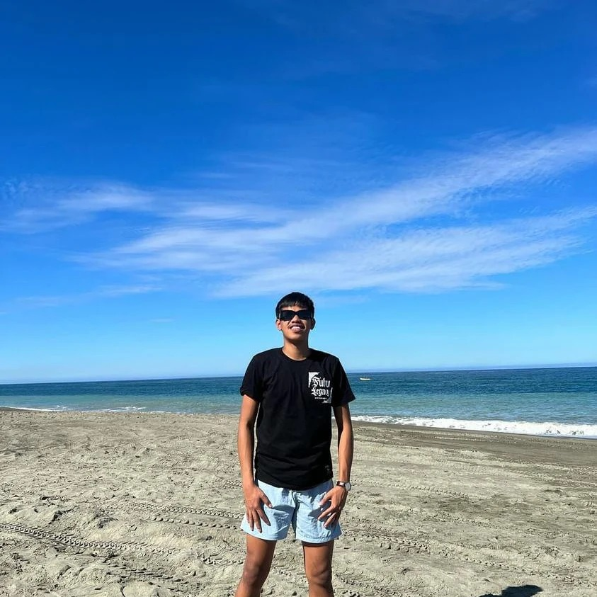
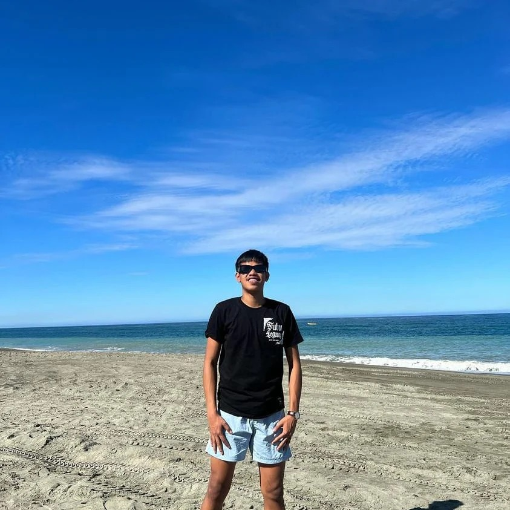
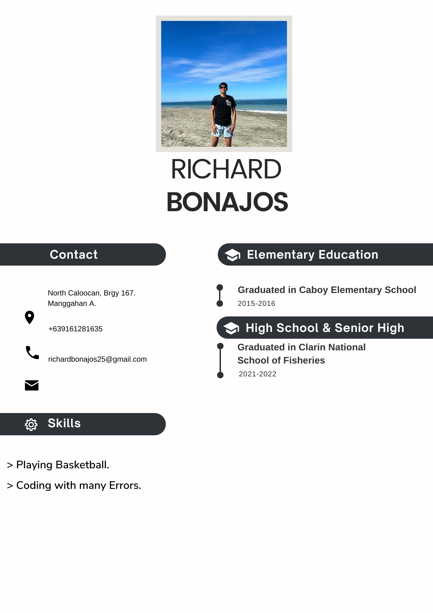
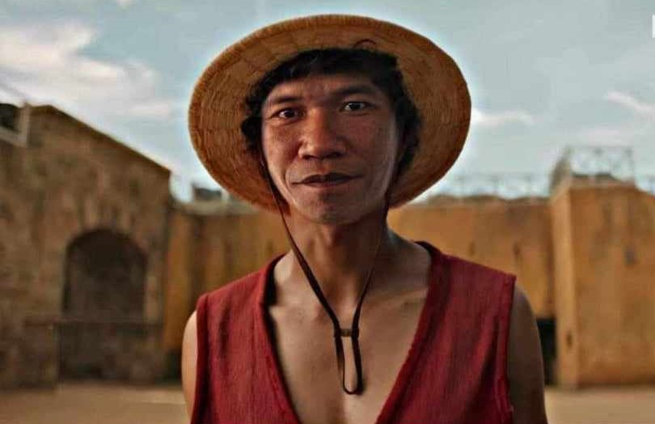
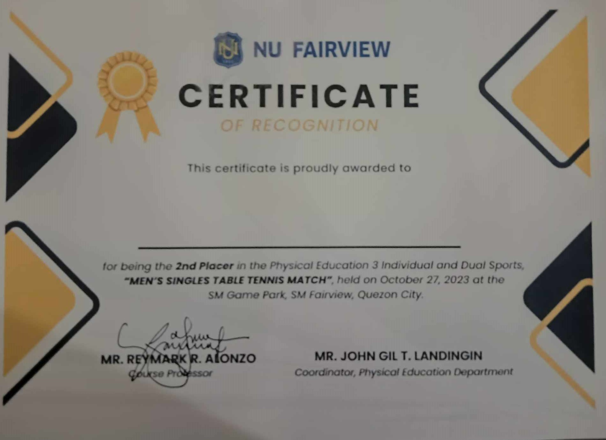
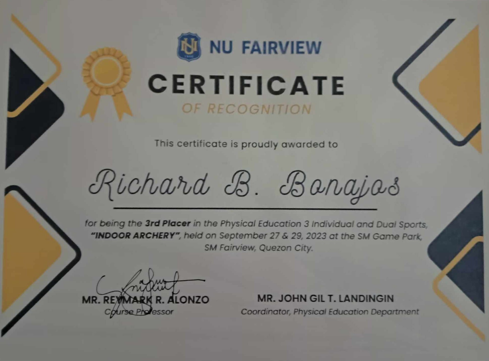
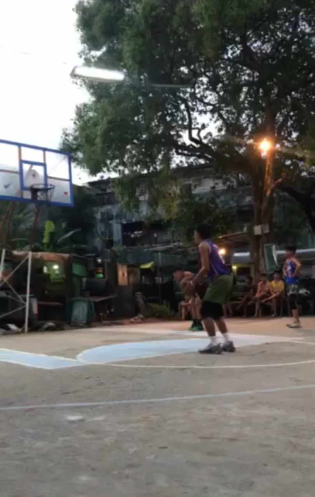

HELLO AND WELCOME
I'm Richard Bonajos, a positive and joyful person you've ever met.

I'm Richard Bonajos, a positive and joyful person you've ever met.

Better click that Button.
WALA PA AKONG NARATING SA BUHAY!
I'm Richard Bonajos a Positive guy who likes playing with kids. And i'm a big fan of Kap Luffy on the anime "One Fifty".
I don't have any creative endeavors but I have some awards from the School.
This one is from Men's Table tennis.
And this one is from the Archery.
Table Tennis.
Basketball.
1. "Mastering the Art of Shooting: Tips for Precision and Consistency" - Dive into the nuances of basketball shooting techniques, covering topics like proper form, hand placement, and mental focus during shots.
2. "The Journey from Amateur to Pro: Lessons from Successful Basketball Players" - Explore the stories of professional basketball players who started their careers at the amateur level, highlighting the lessons and challenges they faced along the way.
3. "Strategic Play: Understanding Offensive and Defensive Tactics in Basketball"* - Break down essential offensive and defensive strategies in basketball, discussing the importance of teamwork, communication, and adaptability on the court.
4. "Basketball and Personal Growth: Life Lessons from the Hardwood" - Reflect on the personal development aspects of playing basketball, discussing how the sport can instill qualities such as discipline, resilience, and leadership in individuals.
https://www.grindbasketball.com/blogs/news/mastering-the-art-of-shooting-in-basketball-a-comprehensive-guideGet in touch with me:
 Richard Bonajos
Richard Bonajos
 burdagilll
burdagilll
1. Why are you keep smiling?
A. Because im Happy!
2. Are you a Bisaya?
A. Yeah i'm pure boholano!
3. Were you from?
A. I'm from Caluwasan, Clarin, Bohol!